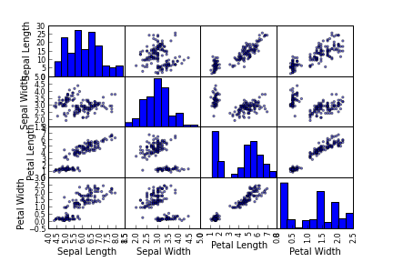
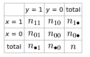
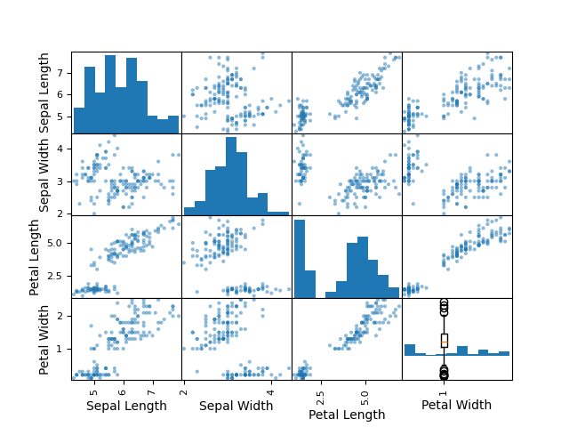

Beklenti (Expectation)
Bu değer, dağılım \(f(x)\)’in tek sayılık bir özetidir. Yani beklenti hesabına bir taraftan bir dağılım fonksiyonu girer, diğer taraftan tek bir sayı dışarı çıkar.
Tanım
Sürekli dağılım fonksiyonları için \(E(X)\)
\[ E(X) = \int x f(x) \mathrm{d} x\]
ayrıksal dağılımlar için
\[ E(X) = \sum_x xf(x) \]
Hesabın, her \(x\) değerini onun olasılığı ile çarpıp topladığına dikkat. Bu tür bir hesap doğal olarak tüm \(x\)’lerin ortalamasını verecektir, ve dolaylı olarak dağılımın ortalamasını hesaplayacaktır. Ortalama \(\mu_x\) olarak ta gösterilebilir.
\(E(X)\)’in bir tanım olduğuna dikkat, yani bu ifade tamamen bizim yarattığımız, ortaya çıkarttığımız bir şey, matematiğin baz kurallarından gelerek türetilen bir kavram değil. Notasyonel basitlik için üstteki toplam / entegral yerine
\[ = \int x \mathrm{d} F(x) \]
diyeceğiz, bu notasyonel bir kullanım sadece, unutmayalım, reel analizde \(\int x \mathrm{d} F(x)\)’in özel bir anlamı var (hoca tam diferansiyel \(dF\)’den bahsediyor) [2, sf. 69].
Beklentinin tanımının kapsamlı / eksiksiz olması için \(E(X)\)’in “mevcudiyeti’’ için de bir şart tanımlamak gerekir, bu şart şöyle olsun,
\[ \int_x |x|dF_X(x) < \infty \]
işe beklenti mevcut demektir. Tersi sözkonusu ise beklenti mevcut değildir.
Örnek
\[ X \sim Unif(-1,3) \]
olsun.
\[ E(X) = \int x \mathrm{d} F(x) = \int x f_X(x) \mathrm{d} x = \frac{1}{4} \int_{ -1}^{3} x \mathrm{d} x = 1 \]
Örnek
Cauchy dağılımının \(f_X(x) = \{ \pi (1+x^2) \} ^{-1}\) olduğunu söylemiştik. Şimdi beklentiyi hesaplayalım. Parçalı entegral tekniği lazım, \(u=x\), \(dv = 1/1+x^2\) deriz, ve o zaman \(v = \tan ^{-1}(x)\) olur, bkz [6]. Demek ki
\[ \int |x| \mathrm{d} F(x) = \frac{ 2}{\pi} \int_{ 0}^{\infty}\frac{x \mathrm{d} x}{1+x^2} \]
2 nereden çıktı? Çünkü \(|x|\) kullanıyoruz, o zaman sınır değerlerinde sadece sıfırın sağına bakıp sonucu ikiyle çarpmak yeterli. Bir sabit olduğu için \(\pi\) ile beraber dışarı çıkıyor. Şimdi
\[ \int udv = uv - \int vdu \]
üzerinden
\[ = [x \tan ^{-1}(x) ]_{ 0}^{\infty} - \int_{ 0}^{\infty} \tan ^{-1}(x) dx = \infty\]
Yani üstteki hesap sonsuzluğa gider. O zaman üstteki tanımımıza göre Cauchy dağılımının beklentisi yoktur.
\(Y\) rasgele değişkeninin varyansı (variance)
Ayrısak olarak diyelim ki her biri \(p_j\) olasılığa sahip \(n\) tane değer \(y_i\) arasından, ve beklenti \(E(Y) = \mu\) ise, varyans bir tür “yayınımın ortalamasıdır’’. Yani ortalama olarak ortalamadan (!) ne kadar sapılır sorusunun cevabını verir,
\[ Var(Y) = \sum_{i=1}^{n}(y_i-\mu)^2 p_i\]
Kare alma işlemi yapıldı çünkü sapmanın eksi mi artı mı olduğu bizi ilgilendirmiyor, sadece onun mutlak değeri, büyüklüğü bizi ilgilendiriyor. \(p_i\) ile çarptık çünkü mesela bazı sapmaların değeri büyük olabilir, ama eğer o sapmaların ortaya çıkma olasılığı düşük ise bu sapmalar toplama, yani varyansa, daha az etki edecektir. Değerlerin \(p_i\) ile çarpılıp sonuçların toplanması beklenti hesabını çağrıştırabilir, ve evet, matematiksel olarak varyans bir tür beklenti hesabıdır. O sebeple genel bir şekilde alttaki gibi belirtilir,
\[ Var(Y) = E((Y-E(Y))^2) \]
İfadede toplama ve bölme gibi işlemler olmadığına dikkat; onun yerine kare ifadeleri üzerinde beklenti ifadesi var. Yani \(Y\)’nin beklentisini rasgele değişkenin kendisinden çıkartıp kareyi alıyoruz, ve bu işlemin \(Y\)’den gelen tüm zar atışları üzerinden beklentisi bize varyansı veriyor. Bir rasgele değişken görünce onun yerine “dağılımdan üretilen sayı’’ düşünmek faydalıdır, ki bu gerçek dünya şartlarından (ve büyük miktarda olunca) veri noktalarını temsil eder.
Varyans formülünü açarsak, ileride işimize yarayacak başka bir formül elde edebiliriz,
\[ Var(Y) = E( Y^2 - 2YE(Y) + (E(Y)^2) )\]
\[ = E(Y^2) - 2E(Y)E(Y) + (E(Y)^2)\]
\[ Var(Y) = E(Y^2) - (E(Y)^2)\]
Tanım
\(y_1,..,y_n\) örnekleminin varyansı (literatürde \(S^2\) olarak geçebiliyor,
\[ S^2 = \frac{1}{n} \sum (y_i - \bar{y})^2 \qquad (2) \]
Standart sapma veri noktaların “ortalamadan farkının ortalamasını” verir. Tabii bazen noktalar ortalamanın altında, bazen üstünde olacaktır, bizi bu negatiflik, pozitiflik ilgilendirmez, biz sadece farkla alakalıyız. O yüzden her sapmanın karesini alırız, bunları toplayıp nokta sayısına böleriz.
İlginç bir cebirsel işlem şudur ve bize verinin üzerinden tek bir kez geçerek (one pass) hem sayısal ortalamayı hem de sayısal varyansı hesaplamamızı sağlar. Eğer \(\bar{y}\) tanımını üstteki formüle sokarsak,
\[ = \frac{ 1}{n} \sum_i y_i^2 + \frac{ 1}{n} \sum_i m^2 - \frac{ 2}{n} \sum_i y_i\bar{y} \]
\[ = \frac{ 1}{n} \sum_i y_i^2 + \frac{ \bar{y}^2n}{n} - \frac{ 2\bar{y}n}{n}\bar{y} \]
\[ = \frac{ 1}{n} \sum_i y_i^2 + \bar{y}^2 - 2\bar{y}^2 \]
\[ = \frac{ 1}{n} \sum_i y_i^2 - \bar{y}^2 \]
ya da
\[ = \sum_{i=1}^{n} y_i^2 - \frac{1}{n} \bigg( \sum_{i=1}^{n} y_i \bigg)^2 \qquad (5) \]
Bu arada standard sapma varyansın kareköküdür, ve biz karekök olan versiyon ile çalışmayı tercih ediyoruz. Niye? Çünkü o zaman veri noktalarının ve yayılma ölçüsünün birimleri birbiri ile aynı olacak. Eğer veri setimiz bir alışveriş sepetindeki malzemelerin lira cinsinden değerleri olsaydı, varyans bize sonucu “kare lira” olarak verecekti ve bunun pek anlamı olmayacaktı.
Kovaryans ve Korelasyon
Harvard Joe Blitzstein dersinden alınmıştır
Bugün “kovaryans günü’’, bu tekniği kullanarak nihayet bir toplamın varyansını bulabileceğiz, varyans lineer değildir (kıyasla beklenti -expectation- lineerdir). Bu lineer olmama durumu bizi korkutmayacak tabii, sadece yanlış bir şekilde lineerlik uygulamak yerine probleme farklı bir şekilde yaklaşmayı öğreneceğiz.
Diğer bir açıdan, hatta bu ana kullanımlardan biri, kovaryans iki rasgele değişkeni beraber / aynı anda analiz etmemize yarayacak. İki varyans olacak, ve onların alakasına bakıyor olacağız, bu sebeple bu analize {}varyans deniyor zaten.
Tanım
\[ Cov(X,Y) = E((X-E(X))(Y-E(Y))) \qquad (1) \]
Burada \(X,Y\) aynı uzayda tanımlanmış herhangi iki rasgele değişken. Üstteki diyor ki rasgele değişken \(X,Y\)’in kovaryansı \(X\)’ten ortalaması çıkartılmış, \(Y\)’ten ortalaması çıkartılmış halinin çarpılması ve tüm bu çarpımların ortalamasının alınmasıdır.
Tanım böyle. Şimdi bu tanıma biraz bakıp onun hakkında sezgi / anlayış geliştirmeye uğraşalım. Tanım niye bu şekilde yapılmış, başka bir şekilde değil?
İlk önce eşitliğin sağ tarafındaki bir çarpımdır, yani “bir şey çarpı bir başka şey’‘. Bu “şeylerden’’ biri \(X\) ile diğeri \(Y\) ile alakalı, onları çarparak ve çarpımın bir özelliğinden faydalanarak şunu elde ettik; artı çarpı artı yine artı değerdir, eksi çarpı artı eksidir, eksi çarpı eksi artıdır. Bu şekilde mesela”aynı anda artı’’ olmak gibi kuvvetli bir bağlantı çarpımın artı olması ile yakalanabilecektir. Aynı durum eksi, eksi de için geçerli, bu sefer her iki rasgele değişken aynı şekilde negatiftir. Eksi çarpım sonucu ise sıfırdan az bir değerdir,”kötü korelasyon’’ olarak alınabilir ve hakikaten de eksi artı çarpımının işareti olduğu için iki değişkenin ters yönlerde olduğunu gösterir. Demek ki bu araç / numara hakikaten faydalı.
Unutmayalım, üstteki çarpımlardan birisinin büyüklüğü \(X\)’in ortalamasına bağlı olan bir diğer, \(Y\) aynı şekilde. Şimdi \(X,Y\)’den bir örneklem (sample) aldığımızı düşünelim. Veri setinin her veri noktası bağımsız özdeşçe dağılmış (i.i.d) durumda. Yani \(X,Y\) değişkenlerine “gelen’’ \(x_i,y_i\) ikilileri her \(i\) için diğerlerinden bağımsız; fakat her ikilinin arasında bir bağlantı var, yani demek ki bu rasgele değişkenlerin baz aldığı dağılımların bir alakası var, ya da bu iki değişkenin bir ortak dağılımı (joint distribution) var.
Not: Eğer \(X,Y\) bağımsız olsaydı, o zaman
\[ Cov(X,Y) = E((X-E(X))) E(Y-E(Y)) \]
olarak yazılabilirdi, yani iki beklentinin ayrı ayrı çarpılabildiği durum… Ama biz bu derste bağımsızlığın olmadığı durumla ilgileniyoruz..
Korelasyon kelimesinden bahsedelim hemen, bu kelime günlük konuşmada çok kullanılıyor, ama bu ders bağlamında korelasyon kelimesinin matematiksel bir anlamı olacak, onu birazdan, kovaryans üzerinden tanımlayacağız.
Bazı ilginç noktalar:
Özellik 1
varyansı nasıl tanımlamıştık?
\[ Var(X) = E( (X-E(X))^2 ) \]
Bu denklem aslında
\[ Cov(X,Y) = E( (X-E(X))(Y-E(Y)) ) \]
denkleminde \(Y\) yerine \(X\) kullandığımızda elde ettiğimiz şeydir, yani
\[ Cov(X,X) = E((X-E(X))(X-E(X))) \]
\[ Cov(X,X) = E((X-E(X))^2) \]
\[ = Var(X) \]
Yani varyans, bir değişkenin “kendisi ile kovaryansıdır’’. İlginç değil mi?
Özellik 2
\[ Cov(X,Y) = Cov(Y,X) \]
İspatı kolay herhalde, (1) formülünü uygulamak yeterli.
Teori
\[ Cov(X,Y) = E((X-E(X))(Y-E(Y))) = E(XY) - E(X)E(Y)\]
İspat
Bu ispat çok kolay, eşitliğin sol tarafındaki çarpımı parantezler üzerinden açarsak, ve beklenti lineer bir operatör olduğu için toplamın terimleri üzerinde ayrı ayrı uygulanabilir,
\[ E(XY) -E(X)E(Y) -E(X)E(Y) + E(X)E(Y) \]
\[ = E(XY) - E(X)E(Y) \]
Çarpımı uygularken mesela \(E(-X \cdot E(Y))\) gibi bir durum ortaya çıktı, burada \(E(Y)\)’nin bir sabit olduğunu unutmayalım, çünkü beklenti rasgele değişkene uygulanınca tek bir sayı ortaya çıkartır, ve vu \(E(Y)\) üzerinde bir beklenti daha uygulanınca bu “içerideki’’ beklenti sabitmiş gibi dışarı çıkartılabilir, yani \(-E(X)E(Y)\).
Devam edelim, \(E(XY) - E(X)E(Y)\) ifadesini gösterdik, çünkü çoğu zaman bu ifade hesap açısından (1)’den daha uygundur. Ama (1) ifadesi anlatım / sezgisel kavrayış açısından daha uygun, çünkü bu ifade \(X\)’in ve \(Y\)’nin kendi ortalamalarına izafi olarak belirtilmiştir, ve akılda canlandırılması daha rahat olabilir. Fakat matematiksel olarak bu iki ifade de aynıdır.
İki özellik bulduk bile. Bir özellik daha,
Özellik 3
\[ Cov(X,c) = 0 \]
Bu nereden geldi? (1)’e bakalım, \(Y\) yerine \(c\) koymuş olduk, yani bir sabit. Bu durumda (1)’in \((Y-E(Y))\) kısmı \(c-E(c)=c-c=0\) olur [aslında bayağı absürt bir durum], ve bu durumda (1) tamamen sıfıra dönüşür, sonuç sıfır.
Özellik 4
\(Cov(cX,Y) = c \cdot Cov(X,Y)\)
İspat için alttaki formülde
\[ Cov(X,Y) = E(XY) - E(X)E(Y) \]
\(X\) yerine \(cX\) koymak yeterli, \(c\) her iki terimde de dışarı çıkacaktır, ve grubun dışına alıncan bu özelliği elde ederiz.
Özellik 5
\[ Cov(X,Y+Z) = Cov(X,Y) + Cov(X,Z) \]
İspat için bir üstteki özellikte yaptığımızın benzerini yaparız.
En son iki özellik oldukça faydalıdır bu arada, onlara ikili-lineerlik (bilinearity) ismi veriliyor. İsim biraz renkli / sükseli bir isim, söylemek istediği şu aslında, bu son iki özellikte sanki bir kordinatı sabit tutup diğeri ile işlem yapmış gibi oluyoruz, yani bir kordinat sabit olunca diğeri “lineermiş gibi’’ oluyor; Mesela \(c\)’nin dışarı çıktığı durumda olduğu gibi, bu özellikte \(Y\)’ye hiçbir şey olmadı, o değişmeden kaldı. Aynı şekilde 5. özellikte \(X\) hiç değişmeden eşitliğin sağına aktarıldı sanki, sadece”\(Z\) durumu için’’ yeni bir terim ekledik.
Özellik 6
\[ Cov(X+Y, Z+W) = Cov(X,Z) + Cov(X,W) + Cov(Y,Z) + Cov(Y,W) \]
Şimdi 5. özelliği hatırlayalım, orada gösterilen sanki bir nevi basit cebirdeki dağıtımsal (distributive) kuralın uygulanması gibiydi sanki, yani \((a+b)(c+d)\)’i açtığımız gibi, 5. özellik te sanki kovaryansı çarpıp topluyormuş gibi “açıyordu’’. En temelde gerçekten olan bu değil ama nihai sonuç benzer gözüktüğü için akılda tutması kolay bir metot elde etmiş oluyoruz. Her neyse, 6. özellik için aslında 5. özelliği tekrar tekrar uygulamak yeterli. Bu arada 5. özellik \(Cov(X,Y+Z)\) için ama \(Cov(Y+Z,X)\) yine aynı sonucu veriyor.
Bu arada 6. özellik çok çetrefil toplamlar üzerinde de uygulanabilir, mesela
\[ Cov \bigg( \sum_{i=1}^{m}a_iX_i, \sum_{j=1}^{n}b_iY_i \bigg) \]
Bu son derece karmaşık gözüküyor, fakat çözümü için aynen 6. özellikte olduğu gibi 5. özelliği yine tekrar tekrar uygulamak yeterli (4. özellik ile de sabiti dışarı çıkarırız, vs).
Çoğu zaman üstteki gibi pür kovaryans içeren bir açılımla çalışmak, içinde beklentiler olan formüllerle uğraşmaktan daha kolaydır.
Şimdi toplamlara dönelim; kovaryanslara girmemizin bir sebebi toplamlarla iş yapabilmemizi sağlaması. Mesela, bir toplamın varyansını nasıl hesaplarız?
Özellik 7
\[ Var(X_1+X_2) \]
Şimdilik iki değişken, ama onu genelleştirip daha fazla değişkeni kullanabiliriz.
Çözelim. 1. özellik der ki varyans değişkenin kendisi ile kovaryansıdır, yani \(Var(X) = Cov(X,X)\). O zaman \(Var(X_1+X_2) = Cov(X_1+X_2, X_1+X_2)\). Böylece içinde toplamlar içeren bir kovaryans elde ettik ama bunu çözmeyi biliyoruz artık. “Dağıtımsal’’ işlemleri yaparken \(Cov(X_1,X_1)\) gibi ifadeler çıkacak, bunlar hemen varyansa dönüşecek. Diğer taraftan \(Cov(X_1,X_2)\) iki kere gelecek, yanı
\[ Var(X_1+X_2) = Var(X_1) + Var(X_2) + 2 Cov(X_1,X_2)\]
Bu alanda bilinen tekerleme gibi bir başka deyiş, “eğer kovaryans sıfırsa toplamın varyansı varyansların toplamıdır’’. Hakikaten kovaryans sıfır olunca üstteki denklemden düşecektir, geriye sadece varyansların toplamı kalacaktır. Kovaryans ne zaman sıfırdır? Eğer \(X_1,X_2\) birbirinden bağımsız ise. Tabii bu bağımsızlık her zaman ortaya çıkmaz.
İkiden fazla değişken olunca? Yine tüm varyansların ayrı ayrı toplamı, ve kovaryanslar da sonda toplanacak,
\[ Var(X_1+ .. + X_n ) = Var(X_1) + .. + Var(X_n) + 2 \sum_{i<j}^{} Cov(X_i,X_j) \]
Sondaki toplamın indisinde bir numara yaptık, sadece 1 ile 2, 2 ile 3, vs. eşlemek için, ve mesela 3 ile 1’i tekrar eşlememek için. Tekrar dedik çünkü \(Cov(X_1,X_3) = Cov(X_3,X_1)\). Eğer indisleme numarası kullanmasaydık, 2 ile çarpımı çıkartırdık (ona artık gerek olmazdı),
\[ .. + \sum_{i \ne j} Cov(X_i,X_j) \]
Şimdi, korelasyon konusuna gelmeden önce, bağımsızlık kavramını iyice anladığımızdan emin olalım.
Teori
Eğer \(X,Y\) bağımsız ise bu değişkenler bağımsızdır, yani \(Cov(X,Y)=0\).
DİKKAT! Bu mantık çizgisinin tersi her zaman doğru olmayabilir, yani bağımsızlık kesinlikle \(Cov(X,Y)=0\) demektir, ama her \(Cov(X,Y)=0\) olduğu zaman ortada bir bağımsızlık var diyemeyiz. Bunu bir örnekle görelim.
\[ Z \sim N(0,1), X=Z, Y=Z^2 \]
Şimdi \(X,Y\) kovaryansının hesabı yapalım
\[ Cov(X,Y) = E(XY) - E(X)E(Y) = E(Z^3) - E(Z)E(Z^2)\]
En sondaki terim sıfırdır, çünkü hem \(E(Z)\) ve \(E(Z^3)\) sıfırdır [hoca burada standart normalin tek sayılı (odd) moment’leri hep sıfırdır dedi]. O zaman şu sonucu çıkartıyoruz, \(X,Y\) arasında korelasyon yok.
Ama bağımlılık var mı? Var. Çünkü hem \(X\) hem \(Y\) \(Z\)’nin birer değişkeni, yani bu durumda \(X\)’i bilmek bize \(Y\)’yi tamamen bilmemizi sağlıyor (sadece ek olarak bir kare alıyoruz). Tabii bağımlılık illa herşeyin bilinmesi demek değildir, biraz bağımlılık ta olabilir, ama biraz bağımlılık bile varsa, bağımsızlık var diyemeyiz. Aynı şey ters yön için de geçerli, \(Y\) bilinince \(X\)’in “büyüklüğünü’’ bilebiliriz, karekök işlemi olduğu için -/+ işareti bilemeyiz ama skalar bir büyüklüğü elde edebiliriz. Yani ters yönde de bağımsızlık yoktur.
Faydalı bir Eşitlik [1, sf 120]
\[ Var(aX+b) = a^2Var(X) \]
Ya da \(b=0\) olduğu durumda (hatta ne olursa olsun)
\[ Var(aX) = a^2Var(X) \]
İspat
\(\mu = E(X)\) olsun ve \(E(aX + b) = a\mu + b\) olduğunu hatırlayalım. Varyans tanımından hareketle,
\[ Var(aX+b) = E\big[ (aX + b - E[aX+b] )^2 \big] \]
\[ = E\big[ (aX + b - a\mu + b )^2 \big] \]
\[ = E\big[ (aX - a\mu )^2 \big] \]
\[ = E\big[ a^2(X - \mu)^2 \big] \]
\[ = a^2 E\big[ (X - \mu) \big] \]
\[ = a^2 Var(X) \]
Korelasyon
Tanım
\[ Corr(X,Y) = \frac{Cov(X,Y)}{SD(X)SD(Y)} \qquad (2) \]
Bu arada hatırlarsak üstte SD ile gösterilen standart sapma, varyansın karesidir.
Bu tanım genelde kullanılan tanımdır. Fakat ben daha farklı bir tanımı tercih ediyorum. Standardize etmeyi hatırlıyoruz değil mi? Bir rasgele değişkenden ortalamasını çıkartıp standart sapmaya bölünce standardize ediyorduk. Bunu kullanarak aslında korelasyonu alttaki gibi tanımlayabiliriz,
\[ Corr(X,Y) = Cov \bigg( \frac{X-E(X)}{SD(X)}, \frac{Y-E(Y)}{SD(Y)} \bigg) \qquad (3) \]
Yani korelasyonun anlamı aslında şudur: \(X,Y\) değişkenlerini standardize et, ondan sonra kovaryanslarını al (üstteki ifadeye Pearson korelasyonu ismi de verilir).
Niye standardize edilmiş kovaryans içeren ifadeyi tercih ediyoruz? Çünkü, diyelim ki \(X,Y\) değişkenleri bir uzaklık ölçüsünü temsil ediyor, ve birimleri mesela nanometre. Fakat bir başkası gelip aynı ölçümü, atıyorum, ışık yılı olarak kullanmaya başlarsa problem çıkabilir. Yani eğer birim yoksa ve ben “\(X,Y\) korelasyonum 42’’ dersem, bunun ne olduğunu anlamak zordur. 42 önümüzdeki veriye göre küçük müdür, büyük müdür? Bilemeyiz. Yani 42 sayısı tabii ki evrendeki tüm soruların cevabıdır [hoca bir filme atfen espri yapıyor, orada 42 sayısının özel bir anlamı vardı], ama önümüzdeki problem için, nedir?
Fakat üstteki formül ölçü birimsiz (dimensionless) bir sonuç verir, yani bir ölçü biriminden bahsetmeden birine rahatça aktarabileceğimiz bir bilgidir. Niye birimsiz oldu? Çünkü \(X\)’in birimi \(cm\) olsa, \(X-E(X)\) yine \(cm\), \(SD(X)\) varyansın karekökü olduğu için \(cm^2\)’nin karekökü yine \(cm\), \(cm\) bölü \(cm\) birim ortadan kalkar.
Bu arada (3) niye (2) ile aynıdır? Eğer bir rasgele değişkenden bir sabiti çıkartırsam onun başka bir değişken ile kovaryansını değiştirmiş olmam. Ki standardize etme işlemi bunu yapar. O zaman niye bu çıkartma işlemini yaptım? Çünkü standardize etme işlemini özellikle kullanmak istedim - standardizasyon bilinen ve rahatça kullanılabilen bir işlem. Standart sapmayı bölmeye gelirsek, şimdiye kadar gördüğümüz özelliklerden biri, bölümü dışarı alabileceğimizi gösteriyor, böyle olunca (2) ifadesini aynen elde ediyorum.
Önemli bir nokta daha: korelasyon her zaman \(-1\) ve \(+1\) arasındadır.
Teori
\[ -1 \le Corr(X,Y) \le 1 \]
Yani ölçü biriminden bağımsız olması avantajına ek olarak hep aynı skalada olan bir değerin rapor edilmesi de faydalıdır. Eğer korelasyon 0.99 bulursam bunun hemen yüksek bir korelasyon olduğunu bilirim.
Bu arada, Çauchy-Schwarz eşitsizliğinden bahsedeyim -ki bu eşitsizlik tanımı tüm matematikteki en önemli eşitsizliklerden biridir- eğer korelasyon formülünü lineer cebirsel şekilde ifade etseydim direk Cauchy-Schwarz eşitsizliğini elde ederdim.
İspat
Önce “WLOG çerçevesinde’’ \(X,Y\)’nin önceden standardize edilmiş olduğunu kabul edelim. [WLOG ne demek? Matematikçiler ispatlar sırasında bunu bazen kullanırlar, genelleme kuvvetinde bir kayıp olmadan (without loss of generality) takip eden şeyi kullanabiliriz demektir, yani “bir başka şey kullanıyorum, ama teori bu çerçevede de hala geçerli’’ demek isterler].
Önceden standardize edildiğini kabul etmek niye fark yaratmıyor? Çünkü bunu gördük, standart olmayan değişkenleri standardize edince yine aynı sonucu elde ediyorum, yani bir şey farketmiyor.
\(Var(X+Y)\)’i hesaplayalım.
\[ Var(X+Y) = Var(X) + Var(Y) + 2Cov(X,Y) \qquad (4) \]
Şimdi sembol olarak \(\rho = Corr(X,Y)\) kullanalım,
Standardize ettiğimizi kabul etmiştik, o zaman \(Var(X)=1,Var(Y)=1\). Ayrıca (3)’te gördüğümüz üzere, standardize durumda kovaryans korelasyona eşittir, o zaman \(Cov(X,Y)=\rho\), yani \(2Cov(X,Y) = 2\rho\). Tüm ifade,
\[ Var(X+Y) = 1 + 1 + 2 \rho = 2 + 2\rho\]
Peki farkların varyansı, \(Var(X-Y)\) nedir? Bir numara kullanalım, \(Var(X-Y)\)’i \(Var(X+(-Y))\) olarak görelim,
\[ Var(X-Y) = Var(X) + Var(Y) - 2Cov(X,Y) = 2 - 2\rho \]
Aslında bu son ifade ispatı tamamlamış oldu, çünkü varyans negatif olmayam bir şeydir, yani
\[ 0 \le Var(X+Y) = 2 + 2\rho\]
\[ 0 \le Var(X-Y) = 2 - 2\rho\]
Bu iki eşitsizliği kullanarak
\[ -2 \le 2\rho\]
\[ -2 \le - 2\rho\]
ve
\[ -1 \le \rho\]
\[ \rho \le 1 \]
Multinom Dağılımın Kovaryansı
Kovaryansı multinom dağılımı bağlamında ele alalım, bildiğimiz gibi multinom dağılımı bir vektördür [ve binom dağılımının daha yüksek boyuttaki halidir, binom dağılımı bildiğimiz gibi \(n\) deney içinde kaç tane başarı sayısı olduğunu verir], ve vektörün her hücresinde “vs. kategorisinde kaç tane vs var’’ gibi bir değer taşınır, ki bu her hücre bağlamında”o kategori için zar atılsa kaç tane başarı elde edilir’’ gibi okunabilir.
Biz ise bu hücrelerden iki tanesini alıp aralarındaki kovaryasyona bakmak istiyoruz. Gayet doğal bir istek.
Notasyon
Elimizde \(k\) tane obje var,
\[ (X_1,..,X_k) \sim Mult(n,\vec{p}) \]
Dikkat, \(p\) bir vektör, tabii ki, çünkü binom durumunda \(p\) tek sayı idi, şimdi “pek çok \(p\)’’ye ihtiyaç var.
Her \(i,j\) için \(Cov(X_i,X_j)\)’yi hesapla.
Eger \(i=j\) ise \(Cov(X_i,X_i)=Var(X_i) = np_i(1-p_i)\).
ki son ifade binom dağılımının varyansıdır. Bu basit durum tabii ki, ilginç olan \(i \ne j\) olmadığı zaman.
Tek örnek seçelim, mesela \(Cov(X_1,X_2)\), buradan gelen sonuç gayet kolayca genelleştirilebilir.
Hesaba başlamadan önce kabaca bir akıl yürütelim; \(Cov(X_1,X_2)\) için artı mı eksi mi bir değer elde ederdik acaba? Multinom dağılımı hatırlayalım, belli sayıda “şey’’ yine belli sayıda kategori arasında”kapışılıyor’’, yani bu kategoriler arasında bir yarış var. O zaman herhangi iki kategorinin kovaryansının negatif olmasını bekleriz.
Çözüm için (4) formülünü kullanacağım, ama seçici bir şekilde,
\[ Var(X+Y) = Var(X) + Var(Y) + 2Cov(X,Y) \]
içinde \(Var(X+Y),Var(X),Var(Y)\)’i biliyorsam, geriye bilinmeyen \(Cov(X,Y)\) kalır. Kısaltma amacıyla \(c = Cov(X,Y)\) diyelim,
\[ Var(X_1+X_2) = np_1(1-p_1) + np_2(1-p_2) + 2c\]
Şimdi \(X_1+X_2\)’nin ne olduğunu düşünelim, bu yeni rasgele değişken “ya kategori 1 ya da 2’’ sonucunu taşıyan bir değişkendir, ki bu da yeni bir”birleşik’’ binom değişkenidir. Bu değişkenin \(p\)’sı toplamı olduğu iki kategorinin \(p\)’sinin toplamıdır, yani \(p_1+p_2\). O zaman bu yeni değişkenin varyansı,
\[ Var(X_1+X_2) = n(p_1+p_2)(1-(p_1+p_2)) \]
Eh artık denklemdeki her şeyi biliyoruz, sadece \(c\)’yi bilmiyoruz, ona göre herşeyi düzenleyelim,
\[ n(p_1+p_2)(1-(p_1+p_2)) = np_1(1-p_1) + np_2(1-p_2) + 2c \]
Burada biraz haldir huldür işlem lazım [bu kısmı okuyucu isterse yapabilir], sonuç
\[ Cov(X_1,X_2) = -np_1p_2 \]
Genel olarak
\[ Cov(X_i,X_j) = -np_ip_j, \forall i \ne j \]
Dikkat edelim, bu sonuç her zaman negatiftir (çünkü \(p\) değerleri olasılık değerleridirler, yani pozitif olmak zorundadırlar)
Örnek
Binom değişkenin varyansını hesaplayalım şimdi. Bunu daha önce yapmıştık ama göstergeç (indicator) rasgele değişkenleri kullanarak yapmıştık bunu, şimdi elimizde yeni bir araç var, onu kullanalım. Varacağımız sonuç \(Var(X) = npq\) olacak. Tanımlar,
\[ X \sim Bin(n,p), X = X_1+..+X_n \]
ki \(X_i\) değişkenleri i.i.d. Bernoulli.
Aslında her \(X_i\) değişkeni bir göstergeç değişkeni gibi görülebilir. Diyelim ki bir \(A\) olayı için göstergeç değişken \(I_A\) olsun. Bu durumda
\[ I_A^2 = I_A \]
\[ I_A^3 = I_A \]
Değil mi? Göstergeç sadece 1/0 olabiliyorsa onun karesi, küpü aynı şekilde olur. Bunu vurguluyorum, çünkü bazen atlanıyor.
Peki \(I_AI_B\)? Ki \(A,B\) ayrı ayrı olaylar. Gayet basit,
\[ I_AI_B = I_{A \cap B} \]
Bu normal değil mi? Eşitliğin solundaki çarpım sadece her iki değişken de 1 işe 1 sonucunu verir, bu ise sadece \(A,B\) olayları aynı anda olduğu zaman mümkündür, ki bu aynı anda olmak küme kesişmesinin tanımıdır.
Bernoullli durumuna dönelim, her Bernoulli için
\[ Var(X_i) = EX_j^2 - E(X_j)^2 \]
\(X_j^2 = X_j\)’dir, bunu biraz önce gördük, ve Binom değişkenleri göstergeç gibi görüyoruz, o zaman \(EX_j^2 = E(X_j) = p\).
\[ Var(X_i) = p - p^2 = p(1-p) = pq\]
Tüm binom dağılımın varyansı,
\[ Var(X) = npq \]
Bu kadar basit. Çünkü \(Cov(X_i,X_j)=0,\forall i \ne j\), yani her bernoulli deneyi birbirinden bağımsız, o sebeple binom varyansı için tüm bernoulli varyanslarını toplamak yeterli, eğer varyansı \(pq\) olan \(n\) tane bernoulli varsa, binom varyansı \(npq\).
Örnek
Daha zor bir örneği görelim.
\[ X \sim HGeom(w,b,n) \]
Bu bir hipergeometrik dağılım. Parametreleri şöyle yorumlayabiliriz, bir kutu içinde \(w\) tane beyaz top var, \(b\) tane siyah top var, ve biz bu kutudan \(n\) büyüklüğünde bir örneklem alıyoruz, ve ilgilendiğimiz örneklemdeki beyaz topların dağılımı.
[dersin gerisi atlandi]
Matrisler İle Kovaryans Hesabı
Eğer verinin kolonları arasındaki ilişkiyi görmek istersek, en hızlı yöntem matristeki her kolonun (değişkenin) ortalamasını kendisinden çıkartmak, yani onu “sıfırda ortalamak’’ ve bu matrisin devriğini alarak kendisi ile çarpmaktır. Bu işlem her kolonu kendisi ve diğer kolonlar ile noktasal çarpımdan geçirecektir ve çarpım, toplama sonucunu nihai matrise yazacaktır. Çarpımların bildiğimiz özelliğine göre, artı değer artı değerle çarpılınca artı, eksi ile eksi artı, eksi ile artı eksi verir, ve bu bilgi bize ilinti bulma hakkında güzel bir ipucu sunar. Pozitif sonucun pozitif korelasyon, negatif ise tersi şekilde ilinti olduğu sonucuna böylece kolayca erişebiliriz.
Tanım
\[ S = \frac{1}{n} (X-E(X))^T(X-E(X))) \]
Pandas ile cov çağrısı bu hesabı hızlı bir şekilde
yapar,
import pandas as pd
df = pd.read_csv('iris.csv')
df = df[['Sepal Length', 'Sepal Width', 'Petal Length', 'Petal Width']]
print (df.cov()) Sepal Length Sepal Width Petal Length Petal Width
Sepal Length 0.685694 -0.039268 1.273682 0.516904
Sepal Width -0.039268 0.188004 -0.321713 -0.117981
Petal Length 1.273682 -0.321713 3.113179 1.296387
Petal Width 0.516904 -0.117981 1.296387 0.582414Eger kendimiz bu hesabi yapmak istersek,
means = df.mean()
n = df.shape[0]
df2 = df.apply(lambda x: x - means, axis=1)
print (np.dot(df2.T,df2) / n)[[ 0.68112222 -0.03900667 1.26519111 0.51345778]
[-0.03900667 0.18675067 -0.319568 -0.11719467]
[ 1.26519111 -0.319568 3.09242489 1.28774489]
[ 0.51345778 -0.11719467 1.28774489 0.57853156]]Verisel kovaryansın sayısal gösterdiğini grafiklemek istersek, yani
iki veya daha fazla boyutun arasındaki ilişkileri grafiklemek için
yöntemlerden birisi verideki mümkün her ikili ilişkiyi grafiksel olarak
göstermektir. Pandas scatter_matrix bunu yapabilir. Iris
veri seti üzerinde görelim, her boyut hem y-ekseni hem x-ekseninde
verilmiş, ilişkiyi görmek için eksende o boyutu bulup kesişme
noktalarındaki grafiğe bakmak lazım.
#df = df.iloc[:,0:4]
pd.plotting.scatter_matrix(df)
plt.savefig('stat_summary_01.png')
İlişki olduğu zaman o ilişkiye tekabül eden grafikte “düz çizgiye benzer’’ bir görüntü olur, demek ki değişkenlerden biri artınca öteki de artıyor (eğer çizgi soldan sage yukarı doğru gidiyorsa), azalınca öteki de azalıyor demektir (eğer çizgi aşağı doğru iniyorsa). Eğer ilinti yok ise bol gürültülü, ya da yuvarlak küreye benzer bir şekil çıkar. Üstteki grafiğe göre yaprak genişliği (petal width) ile yaprak boyu (petal length) arasında bir ilişki var.
Tanım
\(X,Y\) rasgele değişkenlerin arasındaki kovaryans,
\[ Cov(X,Y) = E(X-E(X))(Y-E(Y)) \]
Yani hem \(X\) hem \(Y\)’nin beklentilerinden ne kadar saptıklarını her veri ikilisi için, çıkartarak tespit ediyoruz, daha sonra bu farkları birbiriyle çarpıyoruz, ve beklentisini alıyoruz (yani tüm olasılık üzerinden ne olacağını hesaplıyoruz).
Ayrı ayrı \(X,Y\) değişkenleri yerine çok boyutlu \(X\) kullanırsak, ki boyutları \(m,n\) olsun yani \(m\) veri noktası ve \(n\) boyut (özellik, öğe) var, tanımı şöyle ifade edebiliriz,
\[ \Sigma = Cov(X) = E((X-E(X))^T(X-E(X))) \]
Phi Korelasyon Katsayısı
Phi katsayısı iki tane ikisel değişkenin birbiriyle ne kadar alakalı, bağlantılı olduğunu hesaplayan bir ölçüttür. Mesela \(x,y\) değişkenleri için elde olan \((x_1,y_1),(x_2,y_2),..\) verilerini kullanarak hem \(x=1\) hem \(y=1\) olan verileri sayıp toplamı \(n_{11}\)’e yazarız, \(y=1,x=0\) icin \(n_{10}\), aynı şekilde diğer kombinasyonlara bakarak alttaki tabloyu oluştururuz [5],

Phi korelasyon katsayısı
\[ \phi = \frac{n_{11}n - n_{1\bullet}n_{\bullet 1}} {\sqrt{n_{0\bullet} n_{1\bullet} n_{\bullet 0} n_{\bullet 1}}} \qquad (6) \]
ile hesaplanır. Bu ifadeyi türetmek için iki rasgele değişken arasındaki korelasyonu hesaplayan formül ile başlıyoruz,
\[ Corr(X,Y) = \frac{E (x-E(X)) (y-E(Y)) }{\sqrt{Var(X) \cdot Var(Y) } } \]
\[ = \frac{E(XY) - E(X)E(Y)}{ \sqrt{Var(X) \cdot Var(Y)} } \]
\(X,Y\) değişkenlerinin Bernoulli dağılımına sahip olduğunu düşünelim, çünkü 0/1 değerlerine sahip olabilen ikisel değişkenler bunlar, o zaman
\[ E[X]= \frac{n_{1\bullet}}{n}, \quad Var[X]= \frac{n_{0\bullet}n_{1\bullet}}{n^2}, \quad E[Y]= \frac{n_{\bullet 1}}{n}, \quad Var[Y]= \frac{n_{\bullet 0}n_{\bullet 1}}{n^2}, \quad E[XY]= \frac{n_{11}}{n^2} \]
olacaktır. \(E(XY)\) nasıl hesaplandı? Ayrıksal dağılımlar için beklenti formülünün iki değişken için şöyle ifade edildiğini biliyoruz,
\[ E[XY] = \sum_i\sum_j x_i\cdot y_j \cdot P\{X = x_i, Y = y_j\} \]
Bu ifadeyi tabloya uyarlarsak, ve tablodaki hesapların üstteki ifadeler için tahmin ediciler olduğunu biliyoruz, iki üstteki sonucu elde edebileceğimizi görürüz, çünkü tek geçerli toplam \(x_i y_i\) her iki değişken de aynı anda 1 olduğunda geçerlidir. Bu değerleri yerine geçirince (6) elde edilir.
Phi katsayısının bir diğer ismi Matthews korelasyon katsayısı. Bu hesabı mesela bir 0/1 tahmini üreten sınıflayıcının başarısını ölçmek için kullanabiliriz, gerçek, test 0/1 verileri bir dizinde, üretilen tahminler bir diğerinde olur, ve Phi katsayısı ile aradaki uyumu raporlarız. Sonuç -1,+1 arasında olacağı için sonuca bakarak irdeleme yapmak kolaydır, bu bir başarı raporu olarak algılanabilir. Ayrıca Phi hesabının, AUC hesabı gibi, dengesiz veri setleri üzerinde (mesela 0’a kıyasla çok daha fazla 1 olan veriler, ya da tam tersi) üzerinde bile hala optimal olarak çalıştığı [4] bulunmuştur.
Bazı örnekler,
from sklearn.metrics import matthews_corrcoef
y_true = [+1, +1, +1, -1]
y_pred = [+1, -1, +1, +1]
print ((matthews_corrcoef(y_true, y_pred) ))-0.333333333333Ya da
a = [[0, 0],[0, 0],[0, 0],[0, 0],[0, 0],[1, 0],\
[1, 0],[1, 0],[0, 1],[0, 1],[1, 1],[1, 1],\
[1, 1],[1, 1],[1, 1],[1, 1],[1, 1],[1, 1],\
[1, 1], [1, 1],[1, 1],[1, 1],[1, 1],[1, 1],\
[1, 1],[1, 1],[1, 1]]
a = np.array(a)
print ((matthews_corrcoef(a[:,0], a[:,1])))0.541553390893Medyan ve Yüzdelikler (Percentile)
Üstteki hesapların çoğu sayıları toplayıp, bölmek üzerinden yapıldı. Medyan ve diğer yüzdeliklerin hesabı (ki medyan 50. yüzdeliğe tekabül eder) için eldeki tüm değerleri “sıraya dizmemiz” ve sonra 50. yüzdelik için ortadakine bakmamız gerekiyor. Mesela eğer ilk 5. yüzdeliği arıyorsak ve elimizde 80 tane değer var ise, baştan 4. sayıya / vektör hücresine / öğeye bakmamız gerekiyor. Eğer 100 eleman var ise, 5. sayıya bakmamız gerekiyor, vs.
Bu sıraya dizme işlemi kritik. Kıyasla ortalama hesabı hangi sırada
olursa olsun, sayıları birbirine topluyor ve sonra bölüyor. Zaten
ortalama ve sapmanın istatistikte daha çok kullanılmasının tarihi sebebi
de aslında bu; bilgisayar öncesi çağda sayıları sıralamak (sorting) zor
bir işti. Bu sebeple hangi sırada olursa olsun, toplayıp, bölerek
hesaplanabilecek özetler daha makbuldü. Fakat artık sıralama işlemi
kolay, ve veri setleri her zaman tek tepeli, simetrik olmayabiliyor.
Örnek veri seti olarak ünlü dellstore2 tabanındaki satış
miktarları kullanırsak,
data = np.loadtxt("glass.data",delimiter=",")
print (np.mean(data))213.948899167print (np.median(data))214.06print (np.std(data))125.118481954print (np.mean(data)+2*np.std(data))464.185863074print (np.percentile(data, 95))410.4115Görüldüğü gibi üç nokta hesabı için ortalamadan iki sapma ötesini kullanırsak, 464.18, fakat 95. yüzdeliği kullanırsak 410.41 elde ediyoruz. Niye? Sebep ortalamanın kendisi hesaplanırken çok üç değerlerin toplama dahil edilmiş olması ve bu durum, ortalamanın kendisini daha büyük seviyeye doğru itiyor. Yüzdelik hesabı ise sadece sayıları sıralayıp belli bazı elemanları otomatik olarak üç nokta olarak addediyor.
Grupların Ortalamalarını ve Varyanslarını Birleştirmek
Bazen elimizde bir verinin farklı parçaları üzerinde hesaplanmış ortalama, varyans sonucu olabilir, ve bu hesapları bu parçaların toplamı için birleştirmemiz gerekebilir. Belki paralel süreçler var, verinin parçaları üzerinde eşzamanlı çalışıyorlar, bir ortalama, varyans hesaplıyorlar, ve nihai sonucun bu alt sonuçlar üzerinden raporlanması lazım [3].
İşlenen veri setinin tamamı, birleşmiş (pooled) veri \(D = \{ x_1, x_2,.., x_N\}\) olsun, ki \(N\) veri noktası sayısı. Bu verinin
ortalaması \(a = (x_1 + x_2 + .. + x_N) /
N\), varyansı \(v = ((x_1 - a)^2 + (x_2
- a)^2 + ... + (x_N - a)^2 ) / N\).
Standart sapma tabii ki \(\sigma_N =
\sqrt{v}\).
Veriyi ayrı işledik diyelim, veri şu şekilde ayrıldı \(D_1 = \{ x_1, x_2,..,x_j\}\), \(D_2 = \{ x_{j+1}, x_{j+2},..,x_{j+k}\}\), \(D_3 = \{ x_{j+k+1}, x_{j+k+2},..,x_{j+k+m}\}\). Yani her veri grubunun büyüklüğü sırasıyla \(j,k,m\) ve toplam veri noktaları \(n = j+k+m\).
\(D_P\)’nin ortalaması \(a_P = \frac{1}{n} \sum_{i=1}^{n} x_i\). Her grup \(D_1,D_2,D_3\)’un ortalaması \(a_1,a_2,a_3\) benzer şekilde bulunabilir. Bu durumda “ortalamaların ortalaması’’, yani nihai ortalama \(a_P\) şöyle bulunabilir,
\[ a_P = (j a_1 + k a_2 + m a_3 ) / n \]
Varyansa ulaşmak için kareler toplamı, grup varyanslarına bakalım şimdi, \(D_P\) için kareler toplamı
\[ S_P = \sum_{i=1}^{n} x_i^2 \qquad (7) \]
Gruplar \(D_1,D_2,D_3\) için toplamlar \(S_1,S_2,S_3\) benzer şekilde tanımlanıyor, ve nihai toplam bu gruplar üzerinden \(S_P = S_1 + S_2 + S_3\) olarak tanımlanabiliyor.
Tum veri \(D_P\) icin varyans
\[ v_P = \frac{1}{n} \sum_{i=1}^{n} (x_i - a_P)^2 \]
Bu ifadeyi acarsak
\[ = \frac{1}{n} \sum_{i=1}^{n} ( x_i^2 - 2 x_i a_p + a_p^2 ) \]
\[ = \frac{1}{n} \sum_{i=1}^{n} x_i^2 - \frac{1}{n} \sum_{i=1}^{n} 2 x_i a_p + \frac{1}{n} \sum_{i=1}^{n} a_p^2 \]
\(\frac{1}{n} \sum_{i=1}^{n} x_i = a_p\) olduğunu hatırlarsak, ve \(\frac{1}{n} \sum_{i=1}^{n} a_p\) tabii ki yine \(a_p\) o zaman
\[ = S_p / n - 2 a_p^2 + \frac{1}{n} \sum_{i=1}^{n} a_p^2 \]
\(\frac{1}{n} \sum_{i=1}^{n} a_p^2\) benzer sekilde tekrar \(a_p\),
\[ = S_p / n - 2 a_p^2 + a_p^2 \]
\[ v_P = S_p / n - a_p^2 \qquad (8) \]
Bu durumda parçaların ayrı varyans formülleri de üstteki gibi yazılabilir,
\[ v_1 = S_1 / j - a_1^2, \quad v_2 = S_2 / k - a_2^2, \quad v_3 = S_3 / m - a_3^2 \qquad (9) \]
Amacımız \(v_p\)’yi ufak parçaların varyansları \(v_1,v_2,v_3\) üzerinden hesaplamak.
Simdi (7,8,9) formullerini kullanarak \(v_p\) su sekilde de yazilabilirdi,
\[ v_p = (S_1 + S_2 + S_3) / n \]
Ya da
\[ n v_p = S_1 + S_2 + S_3 - n a_p^2 \]
Açarsak
\[ n v_p = j (v_1 + a_1)^2 + k (v_2 + a_2)^2 + m (v_3 + a_3)^2 - n a_p^2 \qquad (10) \]
Şu da söylenebilir,
\[ n v_p = j v_1 + k v_2 + m v_3 + j a_1^2 + k a_2^2 + m a_3^2 - n a_p^2 \]
Şimdi (10) formülüne nasıl erisebileceğimizi düşünelim. Alttaki iki kavramdan hareketle bunu yapabilir miyiz acaba?
Varyansların ortalamasını
\[ a_v = (j v_1 + k v_2 + m v_3) / n \qquad (11) \]
ve ortalamaların varyansını
\[ v_a = [ j(a_1-a_p)^2 + k(a_2-a_p)^2 + m(a_3-a_p)^2 ] / n \]
diye tanımlayalım. Üstteki formülü açalım,
\[ n v_a = j(a_1-a_p)^2 + k(a_2-a_p)^2 + m(a_3-a_p)^2 \]
\[ = j a_1^2 + k a_2^2 + m a_3^2 - 2 a_p (ja_1 + ka_2 + ma_3) + n a_p^2 \]
Ortadaki terim \(n a_p = ja_1 + ka_2 + ma_3\) olduguna gore
\[ = j a_1^2 + k a_2^2 + m a_3^2 - 2 a_p (n a_p) + n a_p^2 \]
\[ = j a_1^2 + k a_2^2 + m a_3^2 - 2 n a_p^2 + n a_p^2 \]
\[ n v_a = j a_1^2 + k a_2^2 + m a_3^2 - n a_p^2 \]
Varyansların ortalaması (11) formülünü hatırlayalım şimdi
\[ n a_v = j v_1 + k v_2 + m v_3 \]
Üstteki iki formülü toplarsak \(n v_p\)’ye erisebilir miyiz acaba?
\[ n v_a + n a_v = j a_1^2 + k a_2^2 + m a_3^2 - n a_p^2 + j v_1 + k v_2 + m v_3 \]
\(j,k,m\)’nin çarptığı terimleri onların altında gruplarsak,
\[ = j (a_1^2 + v_1) + k (a_2^2 + v_2) + m (a_3^2 + v_3) - n a_p^2 + \]
Evet bu hakikaten mümkün, (10) formülüne erişmiş olduk. Demek ki ayrı gruplardan elde edilen varyanslar ve ortalamarını alıp, bu varyansların ortalamasını ve ortalamaların varyanslarını hesaplayıp birbirine toplayınca tüm verinin nihai varyansına erişmiş oluyoruz.
Kod üzerinde görelim, [3]’teki veriyi kullandık,
d1 = np.array([32, 36, 27, 28, 30, 31])
d2 = np.array([32, 34, 30, 33, 29, 36, 24])
d3 = np.array([39, 40, 42])
n1,n2,n3 = len(d1),len(d2),len(d3)
dp = np.hstack([d1,d2,d3])
m1,m2,m3,mp = d1.mean(), d2.mean(), d3.mean(),dp.mean()
v1,v2,v3,vp = d1.var(), d2.var(), d3.var(),dp.var()
print (m1,m2,m3,mp)
print (v1,v2,v3,vp)
ap = (n1*m1 + n2*m2 + n3*m3) / (n1+n2+n3)
mean_of_var = (n1*v1 + n2*v2 + n3*v3) / (n1+n2+n3)
var_of_means = (n1*(m1-ap)**2 + n2*(m2-ap)**2 + n3*(m3-ap)**2) / (n1+n2+n3)
print (mean_of_var)
print (var_of_means)
print (mean_of_var + var_of_means)30.666666666666668 31.142857142857142 40.333333333333336 32.6875
8.555555555555554 13.26530612244898 1.5555555555555554 22.83984375
9.303571428571427
13.536272321428578
22.839843750000007Not: Birleştirirken \(n_1\),\(n_2\) sayıları ile çarpım var, bu aşırı büyük sayılara sebep olmaz mı? Olabilir doğru, ki kısmen bu sebeple artımsal hesap yapıyorduk, fakat hala büyük sayılardan kaçmak mümkün, mesela genel ortalama hesaplarken \(n_1\),\(n_2\) ile çarpıp \(n_1+n2\) ile bölüyor olabiliriz, fakat bu hesapta tek gerekli olan aslında \(n_1\) ve \(n_2\)’nin birbirine olan izafi büyüklüğüdür. Eğer \(n_i/100\) kullansak birleştirme işlemi yine aynı çıkardı. O zaman bir teknik tüm \(n_i\)’leri en büyük olan ile bölmek, böylece 1’den ufak sayılarla iş yaparız, ve sonuç yine aynı çıkar.
Box Whisker Grafikleri
Tek boyutlu bir verinin dağılımını görmek için Box ve Whisker grafikleri faydalı araçlardır; medyan (median), dağılımın genişliğini ve sıradışı noktaları (outliers) açık şekilde gösterirler. İsim nereden geliyor? Box yani kutu, dağılımın ağırlığının nerede olduğunu gösterir, medyanın sağındada ve solunda olmak üzere iki çeyreğin arasındaki kısımdır, kutu olarak resmedilir. Whiskers kedilerin bıyıklarına verilen isimdir, zaten grafikte birazcık bıyık gibi duruyorlar. Bu uzantılar medyan noktasından her iki yana kutunun iki katı kadar uzatılır sonra verideki “ondan az olan en büyük” noktaya kadar geri çekilir. Tüm bunların dışında kalan veri ise teker teker nokta olarak grafikte basılır. Bunlar sıradışı (outlier) oldukları için daha az olacakları tahmin edilir.
BW grafikleri iki veriyi dağılımsal olarak karşılaştırmak için
içeren Quintus Curtius Snodgrass veri setinin değişik olduğunu ispatlamak için bir sürü hesap yapmışlardır, bir sürü matematiksel işleme girmişlerdir, fakat basit bir BW grafiği iki setin farklılığını hemen gösterir.
BW grafikleri iki veriyi dağılımsal olarak karşılaştırmak için birebirdir. Mesela Larsen and Marx adlı araştırmacılar çok az veri içeren Quintus Curtius Snodgrass veri setinin değişik olduğunu ispatlamak için bir sürü hesap yapmışlardır, bir sürü matematiksel işleme girmişlerdir, fakat basit bir BW grafiği iki setin farklılığını hemen gösterir.
Python üzerinde basit bir BW grafiği
spread= np.random.rand(50) * 100
center = np.ones(25) * 50
flier_high = np.random.rand(10) * 100 + 100
flier_low = np.random.rand(10) * -100
data2 =np.concatenate((spread, center, flier_high, flier_low), 0)
plt.boxplot(data2)
plt.savefig('stat_feat_01.png')
Bir diğer örnek Glass veri seti üzerinde
head = data[data[:,10]==7]
tableware = data[data[:,10]==6]
containers = data[data[:,10]==5]
print (head[:,1])
data =(containers[:,1], tableware[:,1], head[:,1])
plt.yticks([1, 2, 3], ['containers', 'tableware', 'head'])
plt.boxplot(data,0,'rs',0)
plt.savefig('stat_feat_02.png')[ 1.51131 1.51838 1.52315 1.52247 1.52365 1.51613 1.51602 1.51623
1.51719 1.51683 1.51545 1.51556 1.51727 1.51531 1.51609 1.51508
1.51653 1.51514 1.51658 1.51617 1.51732 1.51645 1.51831 1.5164
1.51623 1.51685 1.52065 1.51651 1.51711]
Kaynaklar
[1] Ross, Introduction to Probability and Statistics for Engineers, 3rd Edition
[2] Wasserman, All of Statistics
[3] Rudmin, Calculating the Exact Pooled Variance, https://arxiv.org/abs/1007.1012
[4] Boughorbel, Optimal classifier for imbalanced data using Matthews Correlation Coefficient metric, http://journals.plos.org/plosone/article/file?id=10.1371/journal.pone.0177678&type=printable
[5] Cross Validated, Relation between the phi, Matthews and Pearson correlation coefficients?, https://stats.stackexchange.com/questions/59343/relation-between-the-phi-matthews-and-pearson-correlation-coefficients
[6] Bayramlı, Diferansiyel Denklemler, Ters Trigonometrik Formüller